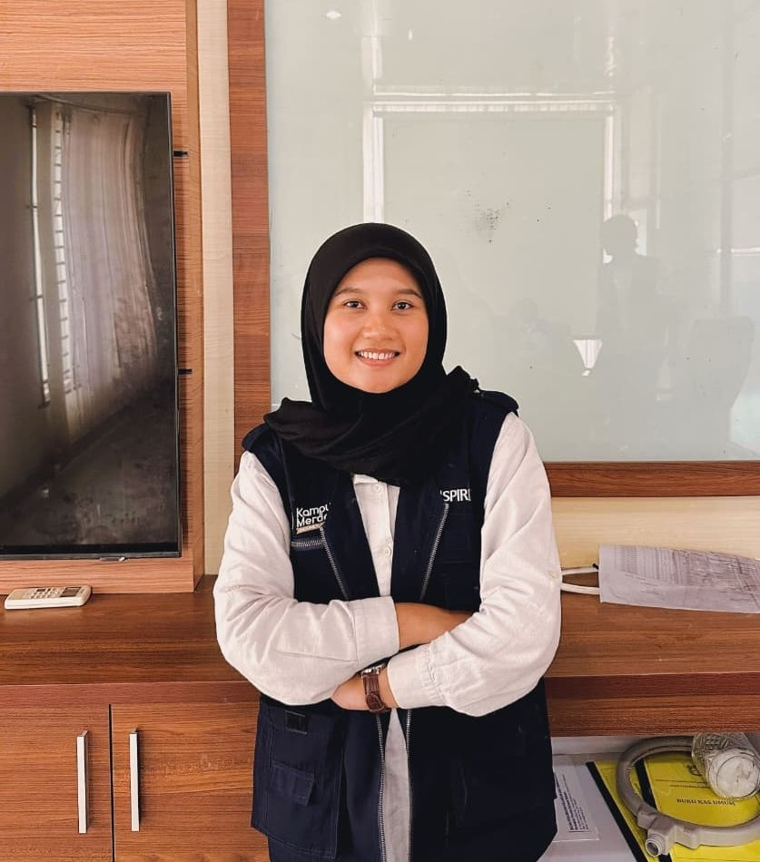

About Me
My name is Luh Ayu Nurul Azhiima, fresh graduate with a Bachelor's degree in Geographic Information Systems from Universitas Gadjah Mada. I am passionate about spatial data and interested in working as a GIS Analyst or GIS Programmer.
Education
Universitas Gadjah Mada
2021 - 2025Bachelor of Geographic Information System
GPA 3.87/4.00SMA Negeri 1 Polewali
2018 - 2021Mathematics and Natural Sciences
Final Grade 91.79/100.00Skills
Mapping & Cartography
Spatial Analysis
Image Interpolation
Data Visualization
HTML, CSS, JS
Python & PHP
Database Management
Tools


